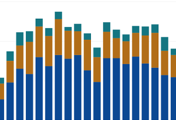

-

GitHub Pages
Learning how to set up this site and use Git
-

Live Analytics Dashboard
Pulling live data from Oxford City Council's analytics and using Heroku
-
Kelp
A LocalGov Makers Day project to help local authorities rate suppliers and their products
-
Google Analytics Charts
Using the Analytics live API to create charts via Google Sheets